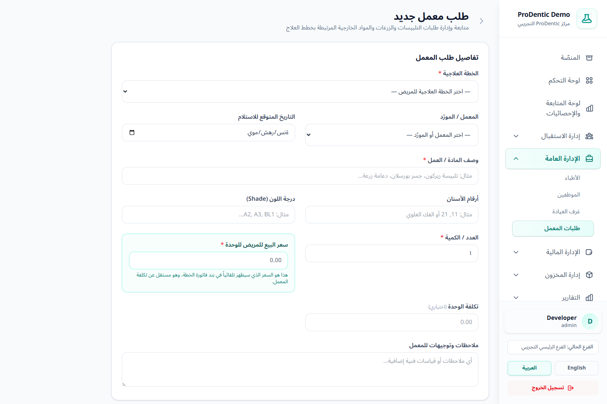
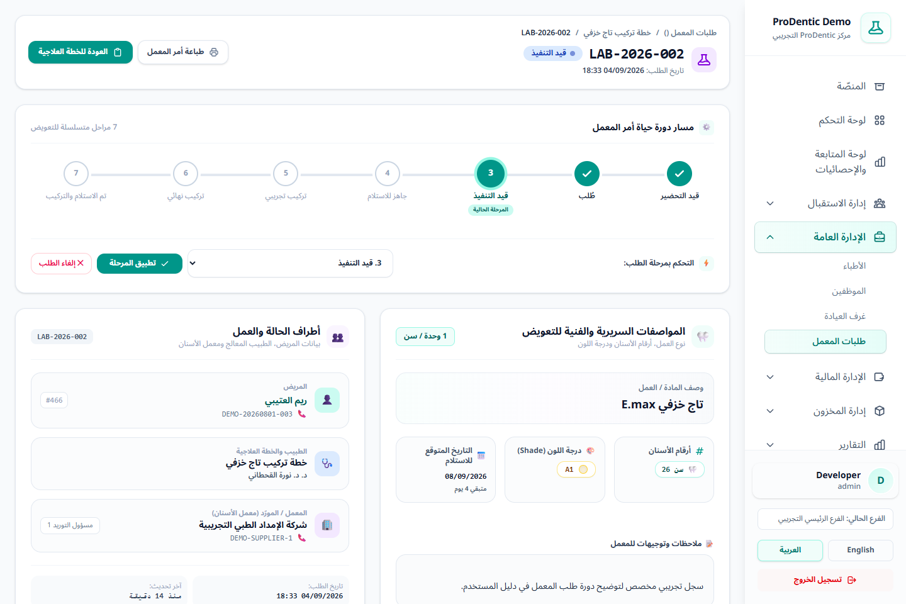

1الوصول ونظرة عامة
من القائمة الجانبية افتح الإدارة العامة ← طلبات المعمل. تعرض البطاقات عدد الطلبات الكلي، والمطلوب، وقيد التنفيذ، والجاهز، والمسلّم، والمتأخر.

يمكن أيضًا إنشاء طلب مباشرة من داخل صفحة الخطة العلاجية؛ عندها تكون الخطة والمريض معروفين مسبقًا ويعود المستخدم إلى الخطة بعد الحفظ.
2إنشاء طلب معمل جديد
- اضغط طلب معمل جديد.
- اختر الخطة العلاجية النشطة؛ يحدد النظام المريض والطبيب المرتبطين بها.
- اختر المعمل أو المورّد إن وجد، وحدد التاريخ المتوقع للاستلام.
- اكتب وصف العمل بدقة، مثل «تلبيسة زيركون أمامية» أو «تاج خزفي E.max».
- أدخل أرقام الأسنان ودرجة اللون والكمية وسعر الوحدة للمريض.
- أدخل تكلفة الوحدة الداخلية إن كانت معلومة، ثم أضف الملاحظات الفنية واضغط حفظ.

سعر المريض مطلوب ويعبّر عن قيمة البند المفوتر للمريض. أما تكلفة المعمل فهي تكلفة داخلية ويمكن تركها فارغة حتى تتضح.
3دورة حياة الطلب
افتح الطلب من أيقونة العرض، ثم اختر المرحلة الجديدة واضغط تطبيق المرحلة. يظهر مسار مرئي يوضح المرحلة الحالية والمنجزة والقادمة.
| # | المرحلة | متى تستخدم؟ |
|---|---|---|
| 1 | قيد التحضير | جمع المقاسات والصور والتعليمات قبل إرسال العمل. |
| 2 | طُلب | تم إرسال الأمر إلى المعمل أو المورّد. |
| 3 | قيد التنفيذ | أكد المعمل بدء تصنيع أو تجهيز العمل. |
| 4 | جاهز للاستلام | العمل جاهز لدى المعمل ولم يُستلم بعد. |
| 5 | تركيب تجريبي | تمت تجربة العمل على المريض قبل الاعتماد النهائي. |
| 6 | تركيب نهائي | مرحلة التركيب النهائي قبل إغلاق الطلب. |
| 7 | تم الاستلام والتركيب | اكتملت الخدمة وتم تسليمها للمريض. |
| — | ملغي | أدخل سبب الإلغاء؛ يحتفظ النظام بالسبب وتاريخ الإلغاء. |

4البحث والمتأخرات
- استخدم بطاقات الحالة لتصفية القائمة بسرعة.
- يمكن التصفية باسم المريض، والمعمل/المورّد، وحالة الطلب، ومن تاريخ.
- يصبح الطلب متأخرًا إذا تجاوز التاريخ المتوقع ولم تكن حالته «تم الاستلام والتركيب» أو «ملغي».
- يظهر عدد الطلبات المتأخرة أيضًا في لوحة التحكم، ويمكن الضغط عليه للوصول إلى القائمة المفلترة.
5الطباعة والربط المالي
- من صفحة الطلب اضغط طباعة أمر المعمل للحصول على نسخة تتضمن هوية المركز والمريض والطبيب والمعمل والمواصفات.
- يظهر الطلب داخل الخطة العلاجية نفسها لتبقى الجلسات والفاتورة والأقساط والعمل الخارجي في ملف واحد.
- عند ربط الطلب ببند فاتورة، تؤثر حالة التسليم في الاعتراف بإيراد البند. التفاصيل في المالية المتقدمة.
6القواعد والصلاحيات
- صلاحية الإدارة الأساسية هي
treatment-plans.lab-orders، وقد يسمح العرض أو الإنشاء عبر صلاحيات الخطة ذات الصلة. - الطبيب المقيّد يرى طلبات الخطط التي هو طبيبها الأساسي أو نفذ جلسة فيها، وفق نطاق وصوله.
- بعد تسليم طلب مرتبط ببند في فاتورة مرحلة ومقفلة، يمنع النظام التراجع عن التسليم حمايةً للتسجيل المالي.
- لا تحذف الطلب لمجرد تغيّر القرار؛ استخدم «ملغي» مع سبب واضح حتى يبقى المسار قابلًا للمراجعة.